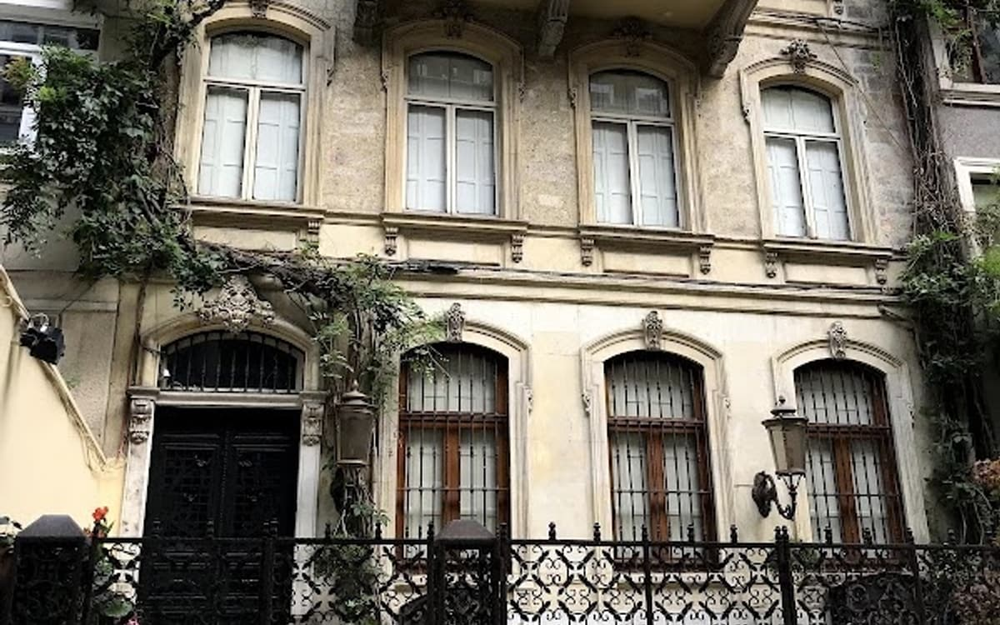
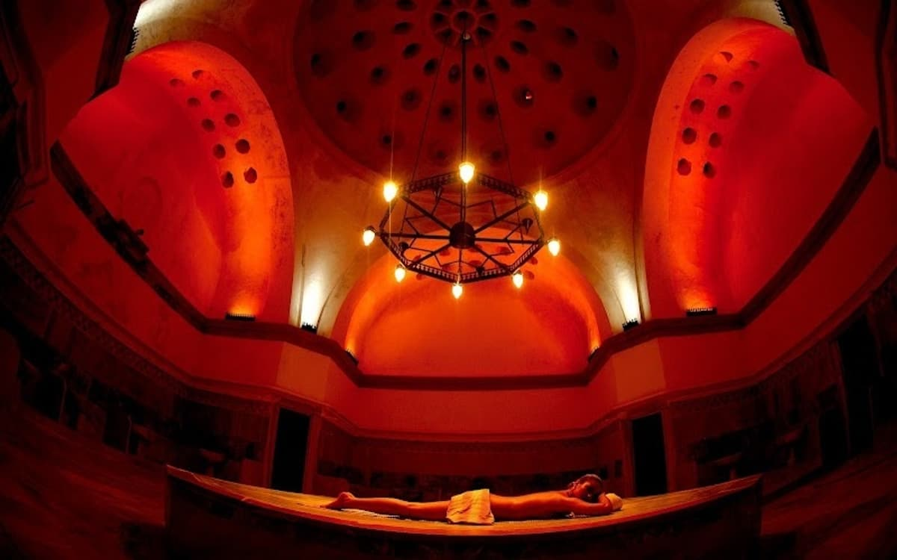
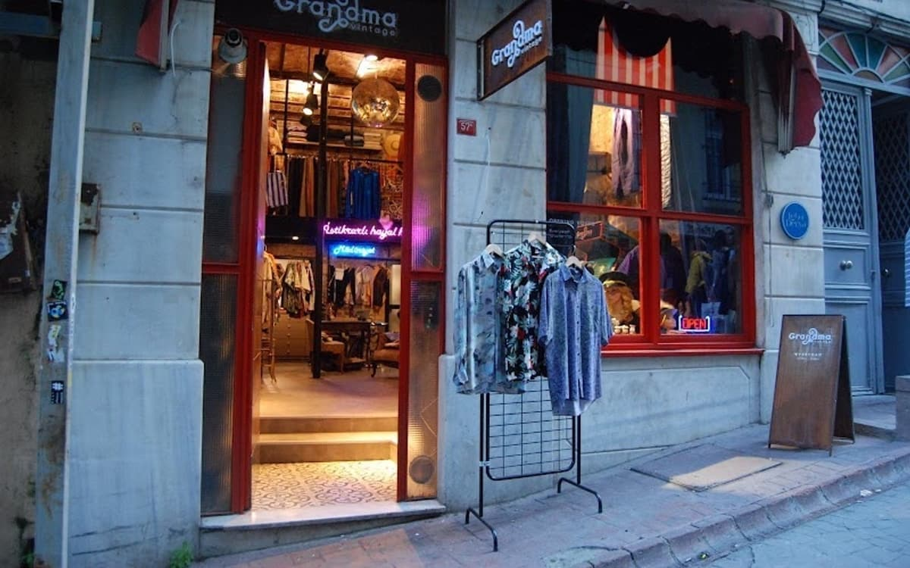

Galata Tower
Построена генуэзцами в 1348 году — лучшие виды на Стамбул открываются с её вершины.

Галата и Бейоглу — место, где старый Стамбул встречается с новым: генуэзские башни, пассажи XIX века, музеи современного искусства и самая живая уличная жизнь города. Вот что мы советуем нашим гостям не пропустить.
Построена генуэзцами в 1348 году — лучшие виды на Стамбул открываются с её вершины.
Исторические музыкальные лавки и яркие фасады на пути от Тюнеля к башне.

📍 ÇukurcumaХан XIX века у Тюнеля на Истикляль: после реставрации здесь кафе и рестораны вокруг тихого внутреннего двора.
Сердце города и начало проспекта Истикляль — оживлённой пешеходной улицы, которая не затихает ни днём, ни ночью.
Знаменитая пешеходная улица от Таксима до Тюнеля, по которой ходит красный ностальгический трамвай.
Обязательная к просмотру постоянная коллекция — включая «Укротителя черепах» Османа Хамди-бея — и сменные выставки.
Архитектура, искусство и спокойная атмосфера в здании бывшего османского банка — и отличный магазин редких книг и журналов.
Современное турецкое искусство в эффектном новом здании на набережной Каракёя.
Уникальный музей — первый музей живописи и скульптуры в Турции.
Крупнейшая католическая церковь Стамбула — неоготическая достопримечательность на проспекте Истикляль, завершённая в 1912 году.

📍 GalatasarayНаш выбор для настоящего турецкого хамама. Построен Мимаром Синаном в 1580 году и бережно отреставрирован: спокойный и качественный ритуал в нескольких минутах от Каракёя. Бронируйте заранее.
Пассаж «Сите де Пера» 1876 года на Истикляль, сегодня полный ресторанов-мейхане.
Новая набережная Каракёя: круизный порт, кафе, рестораны, бутики и Istanbul Modern.

📍 GalataСтарейшее и самое аутентичное место, чтобы купить турецкий кофе. Будьте готовы к очереди — это магазин, а не кафе.
Трамвай T1 от Каракёя довезёт вас до Султанахмета примерно за 15 минут.
Её архитектура — синтез османской традиции мечетей и византийской церковной архитектуры.
Огромная подземная цистерна, построенная императором Юстинианом в VI веке, знаменитая мраморными колоннами, поднимающимися из воды.
Здесь работают лучшие ремесленники и ювелиры Стамбула — обязательно стоит посетить. Остановка трамвая: Беязыт–Капалычаршы.
Старые греческий и еврейский кварталы на берегу Золотого Рога: крутые улочки, разноцветные деревянные дома и маленькие кафе.
Цифровое искусство в особняке на берегу Босфора (открыт по выходным).
Построена в 537 году: церковь, затем мечеть и одно из величайших зданий мира. Скромная одежда, женщинам нужно покрыть голову.
Дворец османских султанов почти 400 лет. Выделите полдня и не пропустите Гарем.
Три музея рядом с Топкапы, здесь знаменитый Саркофаг Александра.
Ковры, каллиграфия и рукописи во дворце Ибрагима-паши напротив Ипподрома.
Османский дворец XIX века на Босфоре — хрусталь и позолота. По понедельникам закрыт.
Небольшая мечеть в стиле барокко прямо под Босфорским мостом. Попробуйте кумпир у соседних лотков.
Крепость, построенная Мехмедом II в 1452 году перед завоеванием; с её стен открывается вид на Босфор.
Автомобили, поезда, корабли и даже подлодка на Золотом Роге. Отлично для детей.
Большой аквариум во Флорье, ближе к аэропорту. Хороший план на дождливый день с детьми.
Очаровательная коллекция старинных игрушек в особняке на азиатской стороне.
Крупнейший из Принцевых островов: улицы без машин, деревянные особняки и море. Паромы из Кабаташа.
Авторы фотографий указаны на каждом снимке. Точки на карте: © участники OpenStreetMap.
Наши апартаменты в Галате, Таксиме и Бейоглу — в нескольких минутах ходьбы от всех мест из этого гида. Бронируйте напрямую и платите на 10% меньше, чем на Airbnb.

Такси, шаттлы Havaist/Havabus и метро из аэропорта Стамбула (IST) и Сабихи Гёкчен (SAW) в Галату, Таксим и Бейоглу — время в пути, цены и последний шаг до наших апартаментов.
Читать гид →
Рестораны, кафе, бары и кондитерские Галаты, Каракёя, Джихангира и Бейоглу, которые мы советуем нашим гостям.
Читать гид →